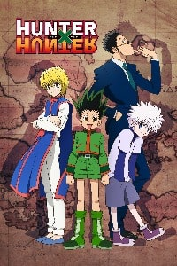

Tokyo is haunted by ghouls who resemble humans but feast on their flesh. As a ghoul-human hybrid, Ken Kaneki finds himself caught between two worlds.
The story focuses on a young boy named Gon Freecss who discovers that his father, who left him at a young age, is actually a world-renowned Hunter, a licensed professional who specializes in fantastical pursuits such as locating rare or unidentified animal species, treasure hunting, surveying unexplored enclaves, or hunting down lawless individuals
